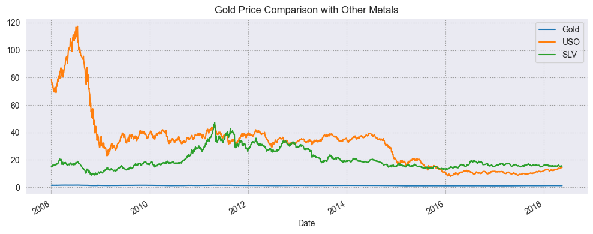
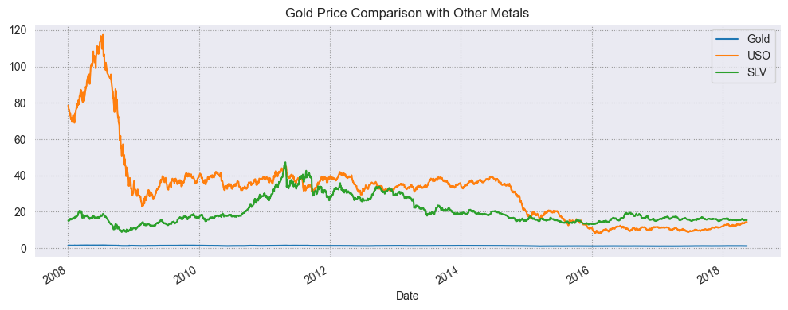

üìä
10,000+
Sales Records
üè™
25
Store Locations
üìà
40%
Effort Reduction
üéØ
25%
Forecast Accuracy
üìä
12+
Dashboard Views
üí∞
70%
Top Products Profit
Developed a comprehensive Power BI dashboard analyzing over 10,000 coffee sales records across 25 store locations. Implemented advanced DAX measures, dynamic filters, and time-intelligence functions to monitor monthly revenue growth, profit margins, and category performance. Automated reporting reduced manual effort by 40% and improved sales forecasting accuracy by 25%. Enabled management to identify the top 10 products driving 70% of total profit and optimize promotional strategies.
üè•
15,000+
Emergency Visits
⏱️
18%
Wait Time Reduction
üõèÔ∏è
12%
Bed Turnover Rate
üìä
24/7
Real-time Monitoring
⚡
3
Critical Metrics
üéØ
100%
Data Coverage
Created an advanced ER analytics dashboard visualizing patient flow, wait times, and capacity utilization for 15,000+ emergency visits. Applied Power Query transformations and calculated measures to identify critical bottlenecks by hour, race, and triage category. Revealed efficiency opportunities that could reduce average wait time by 18% and improve bed turnover rate by 12%. The dashboard empowered hospital management to make data-driven decisions improving patient care and operational readiness.
üë•
5,000+
Employee Records
üìâ
10%
Attrition Reduction
üìà
15%
Engagement Improvement
üéØ
100%
Data Coverage
üìà
5
Key Metrics
üîç
3
Analysis Views
Built a data-driven HR dashboard combining SQL data extraction and Power BI for 5,000+ employee records. Provided visual insights into headcount trends, attrition rates, and workforce diversity using interactive charts and drill-down views. Designed metrics for gender ratio, departmental turnover, and performance KPIs. Findings led to initiatives projected to reduce attrition by 10% and improve engagement scores by 15%, supporting long-term HR strategy and workforce planning.
üìÖ
10
Years of Data
üéØ
0.93
R² Score
üìâ
21%
MAE Reduction
ü§ñ
3
ML Models
üìä
4
Python Libraries
üíπ
2
Trading Strategies
Developed a machine learning pipeline analyzing 10 years of gold price data using Python, pandas, scikit-learn, and TensorFlow. Implemented Random Forest, XGBoost, and LSTM models, achieving R² = 0.93 and MAE reduction of 21% compared to baseline. Conducted time-series decomposition, moving average smoothing, and feature correlation. Integrated RSI and moving average strategies for backtesting, helping to simulate trading scenarios and optimize investment performance.
üåç
200+
Countries Analyzed
üéØ
92%
Prediction Accuracy
üìä
80%
Global Case Coverage
üî¨
4
Python Libraries
üìà
3
Trend Categories
üéØ
10
Top Countries
Performed large-scale COVID-19 data analysis using pandas, NumPy, matplotlib, and scikit-learn. Processed 200+ country datasets from Johns Hopkins repository, visualizing infection, recovery, and mortality trends. Built regression models predicting case growth with 92% accuracy. Explored relationships between vaccination rates, government response, and infection outcomes. Delivered actionable insights through visual dashboards highlighting the top 10 countries driving 80% of global case changes.
üè†
80+
Housing Attributes
üéØ
0.91
R² Score
üìâ
18%
RMSE Reduction
ü§ñ
3
ML Algorithms
üîß
2
Analysis Tools
üí°
100%
Model Interpretability
Developed predictive models for real-estate valuation using 80+ housing attributes including square footage, neighborhood score, and renovation year. Applied Random Forest, Gradient Boosting, and MLP with grid search hyperparameter tuning. Achieved R² = 0.91 with RMSE reduction of 18%. Used SHAP and feature importance to enhance interpretability. Findings supported strategic pricing and investment recommendations based on market behavior and property characteristics.
üèõÔ∏è
VPS
Public Sector
üìä
2
Datasets Combined
üìÖ
4
Year Analysis
üéØ
5
Report Pages
üîß
3
Analysis Tools
üìà
100%
Data Coverage
Developed a comprehensive workforce analytics project analyzing Victorian Public Sector data by integrating SOPS 2020 Staff Opinion Survey with SOPS 2024 Remuneration dataset. Built interactive Tableau dashboards to assess workforce engagement, remuneration patterns, and equity outcomes across departments and occupations. Designed ETL workflows using Python pandas for complex Excel data preparation and created star schema data modeling. Delivered actionable insights supporting evidence-based HR decision-making with comprehensive demographic analysis and pay equity trends.


 
